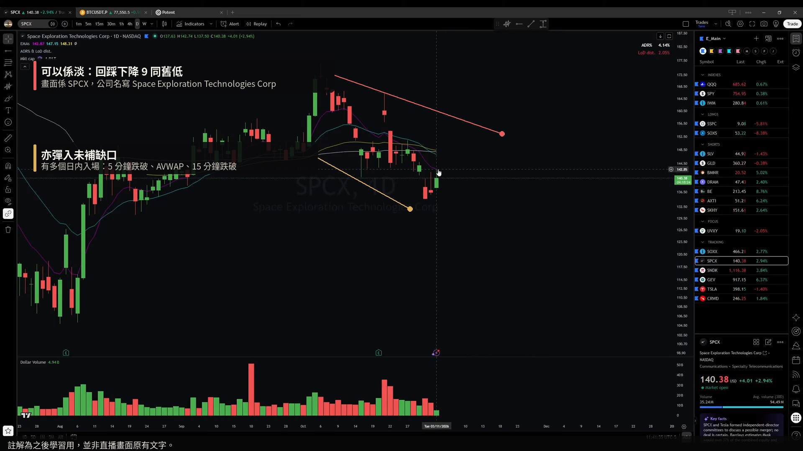
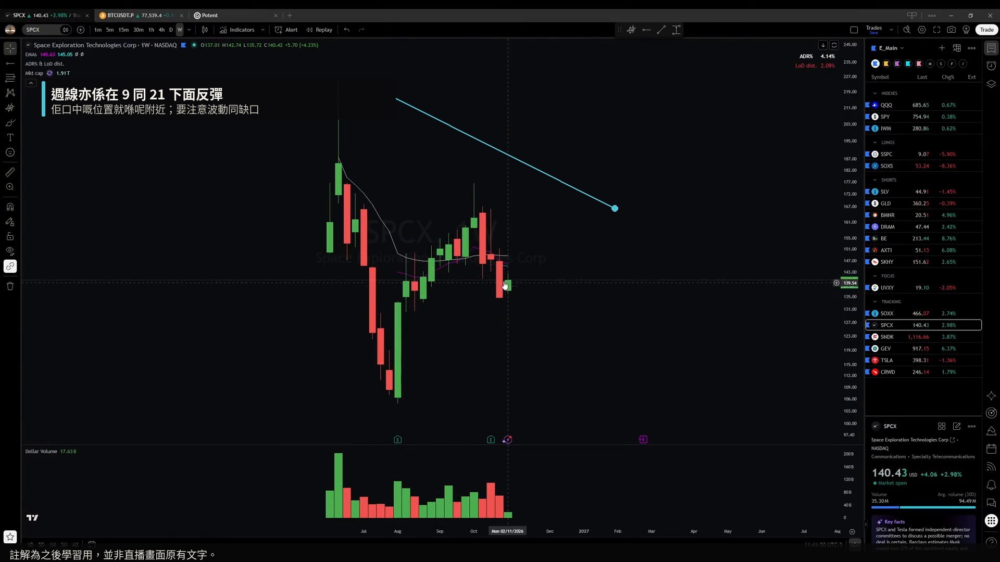

概要
可以係淡：回踩下降 9，週線喺 9 同 21 下面反彈
2:19:29 前後有人問起呢隻短；約 2:19:45 畫面係 SPCX 日線，標題寫 Space Exploration Technologies Corp · 1D · NASDAQ，當時價格約 140。本頁只報告畫面所見，唔把呢個代碼當成已公開上市嘅 SpaceX 去額外推論。佢話可以係淡：回踩下降緊嘅 9，同埋前低。週線佢亦鍾意呢段反彈，尤其係喺 9 同 21 下面嘅 bounce。雖然前面可能有波動，仍然覺得頗為 shortable；只係唔好用瘋狂倉位，並要預備高開缺口。日内入場亦有好多：5 分鐘跌破、由擺動高位／日内高位拉嘅 AVWAP、15 分鐘跌破，同埋彈入未補缺口。最後話自己嘅太空主題整體偏弱，而 Space 其實係裏面最強嗰隻。
圖一 · 主圖
SPCX 日線：回踩下降 9、舊低，同未補缺口
直播 2:19:45

原話
I think it could be a short: pullback into the declining 9, previous swing lows. I also like this weekly bounce as well, like the bounce below the 9 and 21. But I'm not sure, like given that maybe volatility ahead, but I think it's still fairly short. Just don't do like crazy sizing and be prepared for the gap ups. And I think the intraday entries is also pretty… we got a lot of intraday entries here. 5-minute candle breakdown, anchor VWAP from the swing high, the intraday high, we got several bounce into the anchor VWAP and eventually the 15-minute candle breakdown. Also this unfilled gap, we are bouncing into this unfilled gap level. And my space theme is also pretty weak; Space is actually the strongest one.
我覺得可以係淡：回踩下降緊嘅 9，同埋前低。我亦鍾意呢段週線反彈，即係喺 9 同 21 下面嘅 bounce。但我唔肯定，因為前面可能有波動，不過我仍然覺得頗為 shortable。只係唔好用瘋狂倉位，同埋要預備高開。日内入場亦有好多：5 分鐘跌破、由擺動高位／日内高位拉嘅 anchor VWAP、幾次彈入 AVWAP，同最後 15 分鐘跌破。仲有呢個未補缺口，我哋正彈入呢個缺口位置。我嘅太空主題整體都幾弱；Space 其實係裏面最強嗰隻。
點樣讀
日線見到回踩均線、靠近舊低，同時彈向一個未補缺口。佢把呢啲位置讀成可以淡，但又提醒波動同缺口風險，同埋唔好用瘋狂倉位。
畫面代碼係 SPCX，標題寫 Space Exploration Technologies Corp。本頁只記錄畫面文字，唔另外斷定呢隻就係已上市嘅 SpaceX。
圖二
SPCX 週線：喺 9 同 21 下面反彈
直播 2:20:00

原話
I also like this weekly bounce as well, like the bounce below the 9 and 21.
我亦鍾意呢段週線反彈，即係喺 9 同 21 下面嘅 bounce。
點樣讀
週線見到價格喺均線下面反彈。佢把呢段叫做 bounce below the 9 and 21。圖例冇印周期，本頁只標口中位置就喺呢附近，唔寫死邊一條係 9、邊一條係 21。
附註
注意事項
- 畫面代碼係 SPCX，標題寫 Space Exploration Technologies Corp · NASDAQ。本頁只報告畫面所見，唔把呢個代碼當成已公開上市嘅 SpaceX 去額外推論。
- YouTube 自動字幕有 “the bounce below the nine and 21”；Whisper 喺 “bounce below the” 之後收得唔完整。本頁按字幕補上，並註明。
- “don't do crazy sizing” 同預備 gap ups 係風險提醒，唔係可複製嘅倉位規則。畫面睇唔到成交價或損益，所以唔寫死呢啲數字。
- 圖例多數只有顏色同數值，冇印均線周期。本頁唔會把某條彩線寫死成 9 或者 21。
免責聲明：呢份係教育拆解，唔係投資建議，亦唔好當作買賣指示。